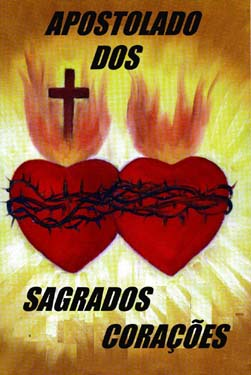

DO
APOSTOLADO"
|
"PORTAL DO APOSTOLADO" |
|



APOSTOLADO DOS SAGRADOS CORAÇÕES

APOSTOLATE OF THE SACRED HEARTS

APOSTOLADO DE LOS SAGRADOS CORAZONES

APOSTOLAT DES SACRÉ COEURS

Portugues English EspañolFrançais


"Louvados sejam os Sagrados Corações de Jesus e Maria"

Bemvindos a Home Page dos SAGRADOS CORAÇÕES e recebam o calor de nossa atenção aliada a uma espontânea disponibilidade de servir, a fim de que sejam acolhidos com a maior dignidade e sintam-se em casa, desfrutando de um fraterno convívio com os Apóstolos do SENHOR.

JESUS DE NAZARÉ (O Rei dos Reis)
CORPO E SANGUE DO SENHOR (Milagres Eucarísticos)
NOSSA SENHORA DO CARMO DE GARABANDAL
NOSSA SENHORA DO PERPÉTUO SOCORRO
A VIDA DE SANTO ATANÁSIO E DE SANTO ANTÃO
SANTO FREI ANTONIO DE SANT'ANNA GALVÃO
SÃO JUDAS TADEU (Causas Impossíveis)
PADRE JOSÉ DE ANCHIETA (O APÓSTOLO DO BRASIL)
A
DIVINA MISERICÓRDIA
SANTA FAUSTINA KOWALSKA
A GRANDE PROMESSA DO SAGRADO CORAÇÃO DE JESUS
ADORÁVEL E MISTERIOSO ESPÍRITO SANTO
NOSSA SENHORA DAS GRAÇAS - A MEDALHA MILAGROSA
PADRE JOÃO
MARIA BATISTA VIANNEY
PATRONO DOS SACERDOTES
O SANTO CURA D'ARS
SEGREDOS E MISTÉRIO - NOSSA SENHORA DE FÁTIMA
LUZ QUE EMANA DA MENSAGEM DE FÁTIMA
PAPA JOÃO PAULO II (Servo da Fé e da Paz)
SÃO PEDRO APÓSTOLO, O PESCADOR
SÃO PAULO (APÓSTOLO DOS GENTIOS)
NOSSA SENHORA DA CONCEIÇÃO APARECIDA (Padroeira do Brasil)
A DIVINA FACE DO SENHOR (O SANTO SUDÁRIO)
NOSSA SENHORA DE NAJU (Milagres Eucarísticos impressionantes)
COROAÇÃO DE NOSSA SENHORA NO CÉU
SÃO FRANCISCO E SANTA CLARA DE ASSIS (Vida e Obra)
SANTO AGOSTINHO (Bispo de Hipona)
SÃO BERNARDO (Abade de Claraval)
O MISTÉRIO DE DEUS (Santíssima Trindade)
A IMACULADA CONCEIÇÃO (Revelação Divina)
INICIAÇÃO
CRISTÃ
(Sacramento do Batismo, Crisma e Eucaristia).
PREPARAÇÃO
PARA O CASAMENTO
CURSO DE NOIVOS
PASTORAL
DA FAMÍLIA
A Família Brasileira; Visão Cristã do Matrimônio e da Família;
Diretrizes de Ação Pastoral
PUBLICIDADE DOS SAGRADOS CORAÇÕES
ENDEREÇO, INFORMAÇÕES E UTILIDADES

Que nossa MÃE SANTÍSSIMA proteja a sua caminhada existencial e o SENHOR derrame a Luz do ESPÍRITO em seu coração, concedendo-lhe alegria interior e a paz que vem de DEUS.

Welcome to Homepage of the SACRED HEARTS. Here you will receive our attention plus large and more spontaneous for serving you. Because our objective is to promote a good environment in order to make him to feel at home, in the fraternal company of LORD'S Apostles.


OUR LADY OF NAJU (Miracles Eucharistics)
HOLY MARY, MOTHER OF GOD AND OUR MOTHER (Our Lady's Life)
BODY AND BLOOD OF THE LORD (Eucharistics Miracles)
ADORABLE AND MYSTERIOUS HOLY SPIRIT

That our BLESSED MOTHER can to protect your existential road and the LORD can to spill the SPIRIT's Light in your heart, granting him the interior happiness and the peace that comes from GOD.

Bienvenido a HomePage de los SAGRADOS CORAZONES y reciba el calor de nuestra atención y prontitud espontánea en servir, con el objectivo de que sea acogido con la más grande dignidad y siéntase en su casa, disfrutando de una fraternal amistad de los Apóstoles del SEÑOR.

NUESTRA SEÑORA DE NAJU (Milagros Eucarísticos)
SANTA MARIA, MADRE DE DIOS Y NUESTRA MADRE (Vida de la Virgen Maria)
EL CUERPO Y LA SANGRE DEL SEÑOR (Milagros Eucarísticos)

Que nuestra MADRE SANTÍSIMA proteja su caminada existencial y el SEÑOR derrame la Luz del ESPÍRITU en su corazón, concediéndole la felicidad interior y la paz que viene de DIOS.

Bienvenu au Homepage des SACRÉS COEURS et recevez notre chaude attention et spontané empressement pour vous servir. Notre objectif est de proportionner une ambiance recherchée pour vous faire vous sentir à votre maison, avec la satisfaction d'être dans la familiarité des Apôtres de SEIGNEUR.


LE CORPS ET LE SANG DU SEIGNEUR (Miracles Eucharistiques)
NOTRE DAME DE NAJU (Miracles Eucharistiques)
SAINTE MARIE, MÈRE DE DIEU ET NOTRE MÈRE

Que notre MÈRE TRÈS SAINT protège votre course existentielle et Le SEIGNEUR répande la Lumière de l'ESPRIT dans votre cœur, en concédant lui le bonheur intérieur et la paix qui vient de DIEU.